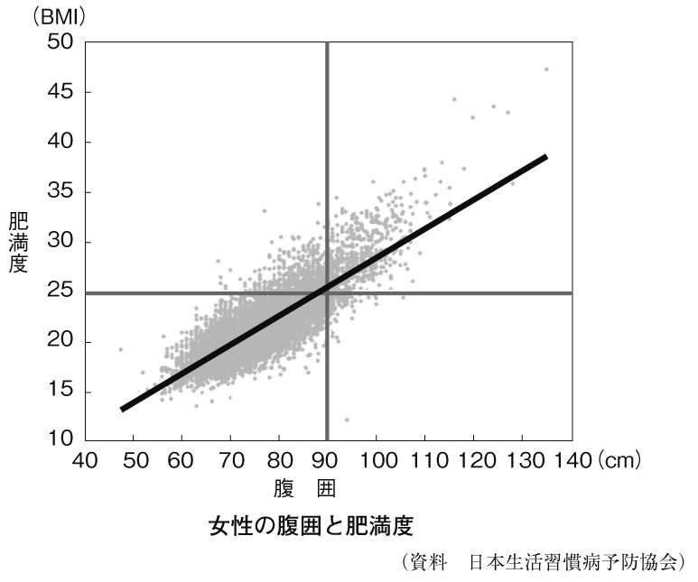

| 「メタボは怖い」は情報操作だった | |
| 武田邦彦 | |
| (2014) | |
「メタボは怖い」は情報操作だった
武田邦彦
本作品の全部または一部を無断で複製、転載、配信、送信したり、ホームページ上に転載することを禁止します。また、本作品の内容を無断で改変、改ざん等を行うことも禁止します。
本作品購入時にご承諾いただいた規約により、有償・無償にかかわらず本作品を第三者に譲渡することはできません。
メタボ制度は『村八分』を利用した、
国を挙げての個人への強制だ
「メタボリック・シンドローム」は、２００８年４月に突如、日本に登場した言葉で、男性は腹回り（腹囲）が85 ㎝ 以上、女性では90 ㎝ 以上の人を指します。日本人の健康と寿命に大きく影響するもので、それほどまでに大切な測定値であるのにもかかわらず、巻き尺があれば誰でも直ちに測ることができ、なおかつ自分の健康状態がわかるというのです。
おまけに、自分の身長の高さも年齢も関係なく、「男性なら85 ㎝ 、女性は90 ㎝ 」と覚えればよく、日本国家の将来を左右するほどの大切なことなので、日本国民は全て測定しなければならないのです。本来は自ら巻き尺で測ればよいのでしょうが、それではウソをつく人もいるというので、厚生労働省の指導で行なわれる「特定健康診査」という「診査」を受けなければなりません。
そして日本国憲法には書かれていませんが、誰かが決めた国民の義務らしく、年齢も細かく決められています。第一に、「40 歳以上74 歳以下が診査の対象」となります。75 歳以上はメタボと同日に始まった「後期高齢者医療制度」で、診査の対象外になっています。
そうなると40 歳から74 歳の人は、いつ診査を受けなければならないのかわからないので、厚生労働省は「特定健康診査・特定保健指導に関するＱ＆Ａ集」を２００８年５月20 日に出して、次のように定めています。
「３月31 日が誕生日の人は、39 歳時の４月１日から診査の対象となる。一方で、同じ誕生日で74 歳の人は、翌年の３月31 日に75 歳になるのだが、こちらも診査の対象となる」
このように細かく決め、「全国民はすべからく診査を受ける」というシステムが誕生したのです。国民のお腹を巻き尺で測るのですから、今までの常識としては「そんなもの自分で測ればいいじゃないか」と思いますし、病気ならともかく、少し太っているぐらいで人前でお腹を出して巻き尺で測ってもらうというのも、マンガ的な感じがします。
とはいえ、この制度は大まじめです。もし、お腹の周りが男性で85 ㎝ を超えると、「特定保健指導」を受けなければなりません。これは「初回面接」と「実績評価」があり、まず診査にひっかかると、お腹があまり出ていない人は「動機付け支援」というグループに、そしてお腹がかなり出ていると「積極的支援」というグループに編入されます。
その際、初回の面接で看護士さんなどにアドバイスをいただき、それに基づいて「行動目標」を作成します。もし、「積極的支援」のグループに入れられたら、サービスはさらに濃厚になり、看護士さんに数回の面接、電話、メール、ファックス、手紙などを出し、少なくも３カ月以上は面接を続けなければなりません。
そして、ついに６カ月経つと、「実績評価」の面接があり、「よくやりましたね」と褒められるか、もし面接を続けたい場合は、お腹が出たままにすれば「また６カ月は続けましょう」と指導を受けることになります。
これほどまでに国民一人ひとりの健康に気を遣ってくれるありがたい政府は、もちろん世界中の国々どこを探しても、日本以外ありません。そのうえ、診査に引っかかると看護士さんが指導してくれるのですから、一人暮らしで生活が乱れがちな中年男性にはうってつけの制度なのかもしれません。
けれども、世の中はよいことばかりではありません。実は、「日本国民はメタボの特定検診診査」を受けなければならないのです。「それは義務です」と書きましたが、実はこの表現は正解ではありません。個人がメタボの診査を受けなくても、メタボと判定されてせっかく看護士さんにご指導いただけるのに、それを断っても監獄に入れられるわけでもありませんが、それでも強制的に行なわなければならないのです。
なぜなら、「国は国民健康保険を運営する組合などに対して、メタボ検診を実施するように義務づけている」からで、もし、市町村や健康保険組合が「メタボ検診を実施しない」、あるいは「実施しても指導が甘く、一定期間に国が定めた受診率や指導の実施率を下回った」場合、国から財政面の罰金、罰則が課せられるという制度になっています。つまり、個人のヘマを集団の責任にして、ヘマをした人ではない特定の人を罰するという「村八分」の公認制度ということです。
かつて、個人より団体が重んじられていた江戸時代、一人ひとりの行状を咎 めるのは面倒なので、村の長 に村人の締めつけをさせていました。そして、「万が一、お前さんの村に不届きものがでたら、年貢高を上げるぞ。殺人などでもあれば、お前さんの首をはねる」と言っておけば、治安を保てていました。「村八分」の制度も、個人を抑圧する社会ではなかなかよい制度で、村の長が厳しく取り締まってくれていました。
ひょっとすると、厚生労働省の中にも、「もし、特定保健指導から５年後に、次の義務が達成されていなかったら、その保険組合には後期高齢者医療制度の補助金が10 ％減額される」などと発言していた、封建制度の信奉者がいたのかもしれません。保険組合に課せられた義務とは、メタボ検診の受診率が65 ％以上、メタボ該当者が出たら特定保健指導をする率が45 ％以上、そして「メタボ該当者を５年で10 ％も減らすこと」だといいます。
なかなか興味深い話です。メタボ検診の受診率や指導の率を上げるのは、役人の指導としては実にわかりやすいものです。けれども、メタボの人を５年で10 ％減らすというのはなかなかすごいことです。なにしろ個人の生活や体質で太ってしまうのですから、それを取り締まるというのは容易なことではありません。国全体でやろうとすると、いくらでも抜け道を考えるでしょうから、「健康保険組合でやらせれば、強制的にメタボに取り組むだろう」という安易な発想なのです。
とはいえ、健康保険組合側は補助金を減らされたら、それこそたまらないでしょうから、診査の時に「少しお腹をへこませてください」と言ってごまかすでしょう。その意味では、ごまかしや犯罪を誘発する制度ともいえそうです。
ところで、この罰則の中で面白いのは、40 歳から75 歳の人が、「太って」しまい、看護士さんの指示通りに瘦せなければ、75 歳以上の人にペナルティーをかけるという方式です。社会的にペナルティーをかける場合、悪いことをした人に罰を加えるのが普通で、年下の人が悪さをしたから、お年寄りが補助金をもらえないという制度も奇想天外です。特に後期高齢者医療制度というのは、75 歳以上の人をそれまで入っていた健康保険などから強制的に脱退させて、市町村の管理に入るのですから、普通の健康保険組合にはペナルティーがないように思えます。
メタボの制度は、「村八分」、「子どもが犯罪を行なえば、親が罰を受ける」という罰則システムとなんら変わりがありません。これが具体的に実行され、なにかのもめごとがあって裁判にでもなったら、それこそ見物でしょう。村八分法や罰遡り法などを、現代の司法がどのように判断するか、私は深く関心があります。
メタボは怖いという
情報操作
ところで、「日本国民はメタボ検診を受ける義務がある」というのは不正確な表現で、正しくは「国民一人ひとりには義務はないが、その人が所属する健康保険組合に罰則が科せられる」という村八分制度があるという説明をしましたが、もう一つ、不正確な表現を使っていました。
それは、「男性で85 ㎝ 、女性で90 ㎝ ならメタボである」とお話しましたが、「男性で85 ㎝ 以上、女性で90 ㎝ 以上の腹囲であり、かつ中性脂肪、コレステロール、血圧の３つのうち、１つ以上、基準値を超えたらメタボ」というのが、見かけ上は正しいわけです。
メタボの制度をよく知らない人がこれを聞いたら、
「そうか、腹囲だけじゃないのか。それならまともな制度じゃないか。中性脂肪、コレステロール、血圧のどれかが異常なら保健指導を受けてもいいんじゃないか」
と誰でも思うでしょう。
でも、私はそれを理解していたうえで、「男性85 ・女性90 」とだけ書いたのには理由があります。それこそが、メタボの制度を理解するポイントなのです。
男性で腹囲が85 ㎝ 以上となると、看護士さんに血圧を測られます。そうすると、１００人が１００人、「血圧が異常ですね」と言われて「メタボ」になってしまいます。その男性が、看護士さんの前で血圧が上がったわけではありません。実は、メタボ制度が検討されていた２０００年の日本人男性の年齢別の平均血圧は、40 代が１３５、50 代が１４８、60 代が１６０、そして70 代前半が１６７だったのです。つまり、メタボの検診を受けなければならない人は40 歳以上ですから、ほぼ全員が「血圧異常」になってしまうという仕組みなのです。
血圧については、日本で血圧の異常というと、日本高血圧学会が出している決め方が一般的で、「高血圧」と言われるのは上が１４０以上です。そしてたとえ１４０以上でも、他の合併症などがなければリスクは少ないとして個別に診断していますし、また国際的には70 代の高齢者については、１６０以上で治療を開始するようになっています。
さらに「白衣効果」という用語があって、病院に行って目の前に白衣を着た看護士（医師も含む）が血圧を測ってくれると、ドキドキして血圧が５も上がるというのが定説ですので、メタボの検診を受けると「40 歳以上の人はすべて高血圧」となってしまいます。
このようにメタボは、いろいろな検診項目があるように見えますが、腹囲が決定的で、腹囲さえ超えれば晴れて看護士さんの指導を受けることとなります。では、日本人でどのぐらいの人が指導されるのでしょうか。
２００４年度の「国民健康・栄養調査結果の概要」という厚生労働省健康局のデータを見てみると、40 歳から75 歳までの男性の58 ％が、「腹囲が85 ㎝ 以上」となります。つまり、およそ６割の男性が「メタボ」、つまり「病気になる予備軍」として、看護士さんの指導を受けることになるのです。
ところが、女性は「腹囲90 ㎝ 以上」ということになったので、指導を受ける女性の割合はわずか22 ％にとどまります。ちなみに、看護士の指導やペナルティーがないアメリカの腹囲の基準は、「男性が１０２㎝ 、女性が80 ㎝ 」なのです。
少し繰り返しますが、「メタボ」という概念は「病気」ではなく、「将来、病気になる可能性が高い人を見つけて、早いうちに看護士さんの指導を受ける」ことなのです。厚生労働省の管轄に「メタボリック・シンドローム撲滅委員会」というものがありますが、そこは次のような文章を出しています。
「メタボリック・シンドロームは、複数の異常が重なっているので、さぞかしいろいろな症状が現れるように思われがちですが、たいていは自覚症状は少なく、（中略）血管の壁にコレステロールがたまったプラークという塊が破裂したりして血管を塞ぎ、血流が途絶え、そこから先へ酸素や栄養が届かず細胞が死んでしまいます。これが心臓で起こると心筋梗塞、脳で起こると脳梗塞となります」
ここまでお読みになって、「メタボは怖くない」と思う人はいないでしょう。血管が破れたらどうにもならないと不安になるのが普通です。「メタボ」は決して病気ではありませんが、このような説明やデータを示されているうちに、「メタボになってはいけない」とまるで病気になるのを防ぐような気持ちになってしまいます。そして「メタボ検診」とは、40 歳以上の男性の６割が「おれはメタボという病気だ」と考え込んでしまったり、「俺はお腹が出て、血圧が異常らしい」と思ってしまう奇妙なものなのです。
鷗外も漱石もメタボでないのに、
なぜ短命だったのか
日本人は世界でもっとも長寿で、しかも高齢者の病気も少ないのです。夏目漱石や森鷗外という、明治の文豪が50 歳前後で他界したことを思い出しますし、これほどの有名人でも50 歳を超えると「もう人生に飽きた」という感じになってしまうのに、私のように彼ら２人から見れば、その業績に到底追いつくことはないのに、60 歳を過ぎた今なお、生き生きとした生活を送っています。
鷗外はよく知られているように、偉大な作家であったと同時に、有名な軍医で陸軍軍医総監を務めました。医学や治療の世界では批判もあるのですが、彼の文学は高い評価を受けています。そして50 歳を少し過ぎた頃に、陸軍を引退して文筆活動をつづけ、60 歳のとき、腎臓病で死去しました。
「森鷗外と健康」というと、後に慈恵医大を設立した海軍の軍医総監・高木兼寛との「兵食論争」が有名です。高木は「脚気は栄養障害」と考え、鷗外は「脚気は感染症」と判断しました。その結果、白米を食べさせた陸軍兵士は、日露戦争の総数１１０万人のうち22 万人が脚気を患い、約３万人が病死したのです。一方、海軍は「海軍食糧条例」を定め、麦飯と副食を重視して、脚気の患者を激減させました。これは鷗外の失態でしたが、もともと脚気という病気は、白米が容易に得られるようになった江戸時代からで、「江戸患い」とも呼ばれていたのです。
このことは、それまでの生活スタイルや食が変わったような時には、伝統的な考え方だけではダメで、よく研究して正しい方法をとらないとならないですし、その当時の最高の医師でも間違うことがあることを教えています。
ところで、鷗外自身は白米を食べても、おかずも十分だったので、脚気になることはありませんでした。彼は50 歳を過ぎても元気でしたが、晩年の写真を見ても、メタボでもなく節制をしていた彼らしく、理想的な体型であったことがうかがえます。
一方の夏目漱石は、次々と小説を書いていたので、肩が凝っていたのでしょう。「肩が凝る」という言葉自体、漱石が作った言葉です。漱石は若くして胃を患い、当時は胃の治療などはまったくできず、熱したこんにゃくを胃の上に乗せる程度でしたので、治せるはずもありません。
「秋風や ひびの入りたる 胃の袋」
という彼の句に、よくならない胃と自分の運命をそのまま受け入れる漱石の姿を思い浮かべることができます。小説家という職業がそうしたのかもしれませんが、彼は生涯、精神的に不安定で、今で言う統合失調症の症状がありましたし、胃潰瘍で苦しみ、吐血もしていました。
漱石は50 歳のときに胃潰瘍を患い他界していますが、体型はなかなかスマートで決してメタボではありません。メタボでないから健康と決まってはいませんが、なぜ彼はメタボでもないのに50 歳で他界したのでしょうか。
二人はともに明治から大正の時代にかけての大文豪ですが、鷗外は作家であるとともに「軍医総監」という国家的にも高い地位に昇った人ですので、豪華な家の中での写真もありますが、漱石も一高・東大の先生でしたので、ひどい日常を過ごしていたわけではありません。
漱石は健康でなかったかもしれませんが、鷗外は間違いなく「まともな生活」をしています。そしてメタボでもないのに、なぜ早くに腎臓を患い、亡くなったのでしょうか。
もちろん、いくらこの２人が偉大な文豪と言っても、日本人の健康を考えるのに、たった２人を挙げても意味がないのは承知ですが、それでも疑問であることには変わりがないのです。
彼らは肉をたらふく食べたり、体型から見ても今のような贅沢な食事を摂っていません。多くの識者が彼らの食生活を「理想的」と認識しているようですし、今のようにエレベーターやエスカレーターなどがなかった時代ですから、自らの足で階段を上り、ドアだって今のように自動で開くものではありません。つまり、鷗外や漱石の時代は、自分の体を使う生活となっていたわけです。食事が理想的で運動も十分、それでいて短命だったわけです。なぜでしょうか。
人の健康も寿命も「科学」が関係してきますが、科学は相反する二つのデータがあれば「自分の好みのほうを選択する」ということはできないのです。真の原因がわかれば、一つの現象として説明できますから、体がスリムで日本食中心の食事で、適度な運動をしていれば、結核とかインフルエンザなどのように細菌やウィルスに感染することを別にすると、長寿であるはずです。もとより、２人の例をもってして日本人の平均を論じることはできません。
けれども、医師が相手にする患者は一人であり、健康指導するときに、「あなたは、日本食を食べ、ダイエットし、適当な運動をしなさい。でも、これは平均的なことで、あなたはそのような努力をしても短命かもしれません」ということになるのです。
このように考えると、２００８年に厚生労働省や一部の医師が打ち出した「メタボ制度」というのは、考え方自体に問題があることがわかります。もし、「メタボになると不健康になる可能性が高い」と呼びかけて、どういう生活をするかを個人に選択させるなら、統計的な傾向を示してもよいでしょうが、メタボ制度のように、個人の腹の周りの寸法を測り、それをある一定期間内に下げないと、自治体や健康保険組合にペナルティーをかけるというのは、まったく矛盾した論理になってしまいます。
つまり、「森鷗外と夏目漱石がなぜ60 歳以上生きられなかったのか」を十分に説明できなければ、メタボ制度を強制的に進めることはできないのです。
鷗外と漱石は当時としては普通か、あるいは多くの人よりよい生活をしていましたし、メタボでもなく、それでいて50 ～60 歳でこの世を去っているということを頭に入れておいてください。
肥満度の上昇とともに
日本の平均寿命も延びてきた
次に、当時の平均寿命を調べてみましょう。彼ら２人が亡くなったのは１９２０年ごろですから、次の日本人の平均寿命のグラフを見てみましょう。横軸は１９２０年、つまり２人の文豪がこの世を去った頃から、２０００年付近までを示しています。
ここでの話は１９２０年頃だけでもよいのですが、この後に戦争後の平均寿命について書くので、それも併せてこのグラフで示しています。
１９２０年頃といいますと、第一次世界大戦が終わった直後で日本人の平均寿命は、「男性が42 歳、女性が43 歳」、つまり、男性も女性もおおよそ40 歳ちょっとだったのです。この時代で、どうしてこれほどまでに平均寿命が低かったのかといいますと、第一に挙げられるのが、「人間の寿命はそんなものだった」ということです。
世界的に見て、その国の平均寿命が40 歳を超えたのは19 世紀のイギリスで、産業革命以後、階級の差は厳しくなりましたが、社会全体の生活が豊かになったことが影響しています。もともと、「ヒト」という動物はそれほど長寿ではなく、人類の文化が花開いたギリシャ、ローマ時代の平均寿命は25 歳程度と推定されています。ですから１９２０年、つまり大正時代の日本人の平均寿命が40 歳ちょっとだったというのは、それほど驚くべき数値ではないのです。
この原因は、生活が貧しく栄養が不十分だったこと、肉体労働や家事労働が辛く、身体が早くに痛んで消耗したこと、乳幼児の死亡率が高かったこと、結核などの病気の治療が十分でなかったことなどが挙げられます。なにしろ毎日の食事は貧しく、「尾頭付きのめざし」でもおかずに出ればよいほうでした。また男性は田畑を耕し、炭鉱でツルハシをふるい、女性は多くの子どもを産み、朝早くから夜遅くまで家事に追われていました。
そのうえトイレは汲み取り式でしたし、水は共同の井戸まで汲みに行き、お湯を沸かすためには裏山にいって薪を採ってこなければならなかったのです。こんな生活では、乳幼児は弱り、結核などの病魔に襲われやすかったのは事実です。
そのため現代は、「医療が進んだから長寿になった」と考えている人がいますが、医療の面だけでなく栄養状態がよくなり、また肉体労働をしなくても働く場所があり、暑さや寒さをこらえる必要がなく、さらに文化的な生活と衛生に関して知識があることが、乳幼児の死亡率を減らし、結核などの病気にかからなくなった理由になっているのです。
もう一つのデータとして、「日本人は栄養を摂っているのか」というグラフを次ページに示します。
これは戦後から最近の日本人男性の「肥満度」、つまりＢＭＩを示しています。戦後は食糧が十分でなく、日本人のＢＭＩは高校生を別にすると「21 」くらいです。ＢＭＩが21 ですと、身長１７０㎝ の人だと体重が60 ㎏ですから、スリムであることが言えます。身長１６０㎝ ならば体重が50 ㎏程度だから、若い頃はありえても、中年以上となると、「異常に瘦せている」といえます。
身長１６０㎝ の男性の場合、体重が60 ㎏でＢＭＩが23 ですが、それでも男性はやや骨太で筋肉質なので、太っているとは言えません。ですから、戦後のＢＭＩが21 ですと、「かなり瘦せている」のです。このグラフと先ほどの日本人の平均寿命のグラフをご覧ください。すぐに気がつくのは、「戦後、栄養状態がよくなってＢＭＩが増え、それに伴って平均寿命が上がった」ことがわかります。
「肥満になるほど長寿になる」となると、メタボを解消してしまうと、日本人を短命にすることを意味し、その結果、老人が少なくなってしまうので、「年金が楽になる」とか、「老人が多いので医療費の削減になる」とか、血も涙もない官僚が考えそうなことです。けれども、それも極端な答えのような気がしています。
私の専門の一つである、環境問題についても、次のような議論が交わされています。
「20 世紀になってＣＯ２が増えている」→「20 世紀になって地球の気温が上がっている」→「だから、ＣＯ２が原因で地球の気温が上がる」
これと同じように考えていくと、
「戦後、肥満度は上がっている」→「戦後、寿命は延びている」→「だから、肥満のほうが寿命が延びる」
となるのです。この論理は私自身が疑問を呈しているので、同じ過ちを犯すことはできないと考えています。つまり、戦後、日本人が肥満になったことと、日本人の平均寿命が延びたことの二つは正しい（相関関係）のですが、だからといって「肥満になると寿命が延びる」という「因果関係」があるかどうかは別問題であるというわけです。
さらに踏み込んで考えたいのが、森鷗外と夏目漱石のことで、彼らは当時の社会では上流階級に属しており、貧困な生活を送っていたわけではありません。それでも体つきがスリムだったのは、食事面が十分でなかったこと（日本の社会全体での食事が、低カロリーだったこと）、エアコンがなかったために、身体に負担のかかる生活だったことなどが挙げられます。つまり、何らかの理由があって瘦せていただけに過ぎないのです。また、鷗外は腎臓、漱石は胃潰瘍が死因なわけですから、結核などの細菌にやられたわけでもなく、内臓が弱っていったのです。そうなると、「栄養の少ない質素な食事、適度な運動、エアコンのない生活」は短命となり、これも現在の日本で言われていることと真逆なのです。それではなぜ、「肥満度（ＢＭＩ）が上がると、寿命が延びる」のでしょうか。
第一に考えられるのは、時代が違うこと、つまり、「80 年の間に医療は進歩した」という見方があります。けれども、現代人の多くは普通に生きていれば、60 歳ぐらいまで大きな病気にかかりません。その点では、鷗外自身は医師なので、医療を十分に受けられなかったとも考えづらいのです。
そうなると、大正時代と明治時代の食生活や、その他の日常生活との差を探さなければなりません。当時の食糧事情はというと、農薬は使っていませんし、食品添加物もほとんど使用されていませんでした。ひょっとすると「農薬や食品添加物を摂るのが長寿の元」ともなりますが、これもすぐには納得できません。当時はテレビや冷蔵庫、洗濯機などはありませんでしたし、汲み取り便所で衛生状態が悪かったのですから、鷗外や漱石には当てはまらないでしょう。
小太りの人のほうが、
ガンになりにくい
最後に「ＢＭＩが21 ～24 までは肥満ではないので、ＢＭＩ25 以上でないと、肥満と寿命の関係を整理しても無駄である」という反論意見を考えてみたいと思います。
日本肥満学会の分類によると、ＢＭＩが25 以上で肥満の度合いが三つに分かれていて、25 ～27 が肥満１、27 ～30 が肥満２、そして30 以上を肥満３とし、厚生労働省が行なった９万人の調査では、若い人から年配者まですべての人を見ると、ＢＭＩが25 以上の「肥満」の人は28 ％いますが、30 以上の人は２％しかいません。
この数値は生活感覚とも合っています。「小太りの人」は３人に１人ぐらいいますし、年配者になると２人に１人ぐらいです。けれども、かなり太っている人は10 人に１人もおらず、おおよそ１００人に２～３人程度です。ですから、「小太りの人」と、「かなり太った人」は短命で、そのほかの72 ％の人は、何らかの理由で長寿になっていると考えられます。
ＢＭＩと病気の発生を分析する際、「普通の人に比べると36 倍の発症率となる」などというと、どう考えてもつじつまが合わないので、もう少し確実な数値を参考にして、考えていきましょう。
厚生労働省、日本生活習慣病予防協会、メタボリック・シンドローム撲滅委員会などは、統一したリスクは示していませんが、「肥満になると病気になりやすい」ことは、確定されていて、日本肥満学会は「肥満の人は普通の人に比べ、心血管疾患は１・４倍に増える」としており、おおよその数字はこのようなものだと考えられます。
しかし、病気は心血管疾患だけではありません。カゼを引いて肺炎になる、お腹の具合が悪いと思ったら腸閉塞だった、海外旅行に行ったらマラリアにかかってしまったなど、病気の数は多いものです。実はここに問題があり、またトリックが潜んでいるのです。
確かに肥満の人ですと、普通の人に比べて心血管疾患が１・４倍になるかもしれません。けれども肥満の人は、「正常な生活を送っていて、小太りな健康体」なのか、「毎日ケーキばかり食べて、まったく運動もせずにかなり太っている人」なのか明確ではありません。人間の体ですから個人差もあるでしょうから、少し太り気味のほうが身体の調子がよいと言う人と、かなり食べても太らない人だっています。そこで、肥満と心血管障害以外の病気の関係を調べてみましょう。
厚生労働省の調査研究で９万人を対象にして、肥満度とガンの関係を調べたデータを次の表に示します。
この調査は普通（ＢＭＩ23 -25 ）の人がガンにかかる比率を１・０として、太っている人と瘦せた人がどのぐらいガンになりやすいかを調べていますが、若干小太りの人は普通の人よりガンになりにくく、かなり太っている人（ＢＭＩ27 -30 ）ですら、普通の人とほとんど変わりません。そしてお相撲さん（ＢＭＩ30 -40 ）のように、１００㎏を超えるような人になると、２割ほどがガンにかかりやすくなります。
ところが瘦せている人は危なく、標準より少し瘦せている（ＢＭＩ21 -23 ）人でも、１割はガンにかかりやすく、ガリガリに瘦せている（ＢＭＩ14 -19 ）人の発がん率は、標準の人に比べ３割もガンになりやすいのです。
ガンになるかどうかは運命的な点もあり、長寿になるとどうしても自殺因子としてのガンが増えてくることもありますが、普通の生活では「免疫力が強く、元気であること」がガンを防ぐ最大の方法です。その点では「小太り」の人が、ガンになりにくいというのは頷ける結果ともいえます。
このデータは、恐れ多くも国立がん研究センター予防研究部が公表しているデータですから、反論意見は少ないですし、ホームページにも公開されていますので、かなりの影響力を持っているデータなのです。
腹囲85 ㎝ 以上とした
数値の根拠はどこにあるのか
「メタボ」に関して、重要な点についてはほぼわかってきました。「小太りになる＝健康を損なう」ということでは、まったくないのです。ＢＭＩ25 のところで線引きをしたり、ましてや腹囲を測って「85 ㎝ 以上なら要注意」とする根拠も、まったくありません。
なぜ、こんなことになってしまったのかは、肥満の研究をしている学者や肥満の薬を発見した医師、肥満の防止薬を発売している製薬会社、肥満防止の活動をしている団体などを詳細に調べてみると、おおよそのことはわかってきます。これについては後半でまとめていきたいと思います。
続いて、「小太りになる＝寿命が縮む」ということもいっさいなく、むしろ長寿になる可能性のほうが強いのです。つまり「メタボが悪い」のは、メタボになると特定の病気や心血管疾患になる可能性が高くなるというだけで、他の病気にかかることが少なくなるので、全体としては健康になります。なにごともよい面もあれば、悪い面もあります。よい面だけを取り上げて「よい」というのは、作為的と言われても仕方のないことでしょう。
仮に「メタボ」の数値を定めて「健康増進活動」をするのなら、ＢＭＩ30 以上に限定すれば、ある程度の意味もあるでしょう。例えば、アメリカのメタボの基準は、腹囲が１０２㎝ までなら大丈夫と言われており、「これ以上の数値の場合には、健康に問題がある」と定めたとしても異論は少ないのです。ところが日本では、男性の腹囲を85 ㎝ 以上としています。
それではこの腹囲とＢＭＩは、どんな関係にあるのでしょうか。日本の男性の腹囲とＢＭＩの関係を作成した図があるので、それを次に示します。
このグラフで、腹囲85 ㎝ をみると、ＢＭＩは23 になります。つまり、ＢＭＩ25 以上を肥満としているのですから、腹囲は90 ㎝ 近くになるはずですが、それをなにかの理由で85 ㎝ にしています。ここで「何かの理由」と書いたのは、「腹囲85 ㎝ では意味がないのでは？」という疑問が、メタボという名称が登場してからすぐに疑問視されていましたが、いまだに満足するような説明はなされていません。むしろこのデータのように、85 ㎝ というのは別の意図で決めたと考えるのが自然です。
肥満と病気との関係は日本肥満学会が専門ですが、そこではＢＭＩは決めていて、25 以上を肥満としています。ですから25 以外の他の数値を、肥満とすることはできないのです。
メタボの制度が発表されて以来、批判が絶えない理由の一つに、「半強制的に、人のお腹の寸法を測る」という奇想天外な方法と、もう一つが看護士さんの指導を受けなければならない「腹囲85 ㎝ 以上」という根拠がさっぱりわからないことが挙げられます。
他国より、
瘦せすぎ女性の多い日本
これまで「病気」を診断するのは、医師の役割となっていました。医師でもない素人が病気の治療などをしたら犯罪と同等に扱われていましたが、メタボに限っては違います。メタボは病気や治療などというわけではなく、「健康」の問題です。当たり前ですが、病気と健康は違いますし、治療と統計も違います。医学的な治療は個々の差が大きく、医師が慎重に診断をして治療をすることになっています。
私の家族や親族には医師が多いのですが、彼らは長い期間、訓練を受けて医師になっているものの、メタボのような「統計的な数値」には部分的な興味しか示しません。なぜなら、医療は患者によって千差万別だからです。腹囲が85 ㎝ 以上で健康な人もいれば、瘦せていても心血管疾患を持った人だっています。
もし医師が、腹囲を測ってそれだけで診察をするなどということになると、それは医師ではありません。医師はあくまでもその人の身体全てを診察して判断するものです。その点でいうと、ＢＭＩが25 以上でガンが減り、心血管疾患の可能性が高くなるという判断は、「科学」であって「医学」ではありません。そこに私が本書を書こうとした目的があるのです。
「腹囲85 ㎝ 以上がメタボ」と言った瞬間に、メタボは医学でも医療でもなく、科学となります。その意味では、医師だけではなく幅広く多くの人が、「医師が独占している医療とは違う」などと、批判するのも当然のことなのです。
２０１０年にＮＨＫが「隠れメタボ」をテーマにした番組を放送しました。この放送が厚生労働省の失敗を隠していたことは別の機会に説明しますが、「隠れメタボ」とは腹囲が85 ㎝ 以下でもメタボの人がいるということですが、「健康は統計ではない」ということを示しています。
また先ほどのグラフから、腹囲85 ㎝ 以上というと、日本人の約半分が該当します。つまり、メタボ検診をすると、日本人の男性の半分が「異常」か「不健康」、もしくは「不健康予備軍」になります。常識的に考えると、よほどの場合を除いて、日本人の男性の半分が「安心できる状態ではない」というのは異常です。
男性の「85 ㎝ 」という基準が奇妙であることはわかったので、次に女性の場合を検証していきたいと思います。男性を先に説明して女性を後にしたのは、日本の場合ですと、肥満という点で男性と女性ではまったくその傾向が違いますから、同様に説明することが無理だからです。
まず女性の場合は、メタボの基準となる腹囲は90 ㎝ ですが、これはどのぐらいの肥満に当たるかを調べてみましょう。
女性の場合は次のグラフでおわかりのように、腹囲が90 ㎝ でＢＭＩ25 となります。

つまり、メタボの基準と女性の肥満は一致しているのです。また、このグラフでプロットしている全体の人数の約８％がメタボと判定されています。男性では約半分がメタボになるのにもかかわらず、女性はわずか８％がメタボになるに過ぎないのです。
女性は看護士さんの指導を受けたくないからという穿った見方もできますが、日本の女性には「国際的に」まったく奇妙な現象があるのです。前に示したように、戦後の日本の男性の肥満度は一貫して上昇しています。一言で言うならば、「日本の男性は長い期間、栄養不足の状態だったが、やっと普通の栄養が摂れるようになって、日本人本来の体型、つまり小太りになり、寿命も延びた」となるのです。
ところが、女性の肥満について、年代を追ってプロットすると恐ろしいことがわかってきました。そのことを次のグラフに示してみました。線が多くてやや見づらいですが、日本女性の特徴がよく出ていて、少子化などもこれに関係があるのかもしれません。
グラフの一番左が１９４７年ですから、戦後間もない頃です。その頃の日本の女性は、年齢に関わらず「ＢＭＩ21 -22 」でした。
ところがその後、年齢によって大きく変化してきます。まず20 代の女性は、美容との関係があったのかもしれませんが、驚くべきことにＢＭＩは低下の一途をたどり、今や「20 ・５」となっています。20 代の女性は結婚を控え、戦後直後から体型に対して異常なほどの関心を示していたことがわかります。このグラフと男性のグラフとを比較しますと、男性は与えられる食事がよければどんどん食べて太っていったことがわかります。
ところが、30 ～40 代の女性は、高度成長期が終わった頃に、「このままじゃいけない！」と気がついたのでしょう。今から40 年ほど前から瘦せ始め、30 代のＢＭＩは一時「22 ・５」まで上昇したのが、今は「21 ・５」で落ち着いています。
けれども40 代になると、瘦せるのはそう簡単なことではありません。女性の筋肉は子どもを育てる時期には落ちません。かつて、子どもを育てる女性は、洗濯板でおしめを何枚も洗い、ぐずる子どもを何時間も抱っこしていなければなりませんでした。そのためにある程度の筋肉がついていたのです。
人間が消費するエネルギーは、運動より何もしないときに消費する「基礎代謝」で消費されます。人にもよりますが、運動によって20 ％ぐらい、普通の生活で80 ％ぐらいでしょう。そして、その基礎代謝で筋肉が消耗するエネルギーは20 ％ぐらいですから、運動と合わせて筋肉は40 ％も使っている計算になります。
ですから、女性の中年太り、つまり女性が中年になると肉付きがよくなるのは、筋肉が落ちたのにもかかわらず、それまでと同じ量の食事を摂るので、余分な分だけ肉がついてくるのです。女性の中年太りの理由はともかく、日本の女性は戦後、男性とは別に独自で肥満の道を歩んできたことがわかります。
もう少し目を広げ、「世界の中の日本の女性」ということで考えてみると、さらに驚くべき結果が得られました。次の「瘦せすぎ女性比率の国際比較」をご覧ください。
このグラフは、横軸に国民一人あたりのＧＤＰが計算されています。ＧＤＰはその国の国民の豊かさを示していますから、ＧＰＤが３万ドル以上のアメリカ、ノルウェー、日本などは「豊かな国」と言えます。これに対し、ＧＤＰが５０００ドルを下回るような国、例えばパキスタン、タンザニアなどは貧しい国です。そしておおよそ女性の体は、豊かであれば太り、貧乏なら瘦せます。現代の日本の女性のダイエットは、「食べながら瘦せたい」と願っているようなので、これはお金がなければ存在しない話です。
国際的な標準線がグラフでは黒線で書かれていますが、それに対し日本だけが別のところにあります。つまり、「ＧＤＰが３万ドルもあるのに、瘦せすぎの女性が15 ％もいる」という状況なのです。
リサイクルが家電製品に及ぶときになって、当時の経済産業省の課長が、
「家電製品のリサイクルシステムができるのは、世界でも日本だけだろう。日本は業界の結束が強く、国民は『右へならえ』が好きだから、家電リサイクルのような無理なシステムもできる」
と言っていたものです。日本の政策は、政府が国民をこのように見ていると感じるものが多く、「いとも簡単に操作できる国民性」と言い換えることもできるのです。
そんなこともあって、日本の女性はいつも周囲を見渡し、「少しでも周りの女性より瘦せたい」という願望に駆られ、瘦せるための競争を行ない、「○○ダイエットがよい」と言えば、それが健康に害をなそうが、体重を減らすことに躍起になります。それがこのような結果を招いたと考えられます。
危険視されるガンの急増は
肥満が原因ではない
それでは日本人は国際的に見て太っているのか、瘦せているのかを検証してみたいと思います。なにしろ２００８年からメタボ制度が始まり、半強制的に国民は瘦せることを求められていました。特に男性は、約半分がダイエットをしなければならないのですから、危機的状態になっているはずです。
国際的にみると日本人の中でも特に若い女性は瘦せすぎています。また、国立がんセンターなどの研究では、極端に太っている人（１００人に２人ぐらい）は別にして、瘦せているとガンにもなりやすいというデータもあります。
「瘦せすぎの女性」という国際比較は、ＢＭＩが「18 ・５」ですから、その女性が12 ％もいて、ガンになりやすさという点では、標準の人に対して「１・３」もあります。このようなことを考えると、２００８年に「メタボ」という制度を作り、村八分のような罰則までつけて日本人を瘦せさせようとするその狙いは、いったい何なのでしょうか。
特に、男性の腹囲が85 ㎝ というところで線を引き、年配の男性の約半分が該当するのを「異常」と定めて「健康指導」を行なっても、腹囲85 ㎝ は、すなわち「ＢＭＩ23 」ですから、肥満ではありません。
また発ガン性という点では、ＢＭＩ30 ぐらいまで変わらないですから、腹囲で言えば１００㎝ を超えないと、「メタボ」と言えないのは、これまで示したデータで十分に理解できることでしょう。そこで、厚生労働省がメタボを政策にした経緯などについて、まとめていきたいと思います。
メタボ制度ができたのは、１９９０年代の終わりに厚生労働省が始めた「健康日本21 」の企画検討会や計画策定検討会など約１年半の協議を経て、「21 世紀における国民健康作り運動」をすることになったのがきっかけです。
この結果は、長寿化する日本において、21 世紀に国民の健康を守るために何が必要かを総合的に分析し、日本人の健康と疾病、死亡原因、国際的な比較に至るまで、徹底的に調べています。
「健康日本21 」を実施するために、「健康日本21 推進全国連絡協議会」などの諸団体が作られました。この協議会は「健康・体力づくり事業財団」の理事長である小澤壯六氏が会長を務めています。もともと母体となる事業財団は「社団法人国民健康・体力つくり運動協会」（１９６５年設立）と「財団法人健康づくり振興財団」（１９７８年設立）が統合されたもので、いわば厚生労働省の外郭団体で、これまでも日本人の健康の維持について大きな貢献を果たしてきました。
「健康日本21 」の連絡協議会には、あいうえお順で財団法人アルコール健康医学協会から、財団法人予防医学事業中央会まで、実に１４０もの団体が加盟しています。この章の終りに「連絡協議会に加盟している団体の名前」を羅列しましたが、日本のように成熟した社会では「健康」というだけで、これだけの数の団体があるものだと、妙に感心してしまいます。
健康を守ることは大切なことから、「健康もお金になる」、「健康も天下り先ができる」というのは妥当ではありませんが、団体の数を見ると健康と言うだけで団体を作ることが可能なのだな、とは実感します。
ところで、「健康日本21 」は長寿社会を迎え、国の政策として必要なものであると考えられていますが、報告書を見ると企画検討会などの議論内容に注目してしまいます。なぜなら、現在の日本人の寿命、死亡原因、疾病などの解析は十分にされ、もっとも危険で急速に増えているものがガンであると再三にわたり指摘しているのにもかかわらず、原因と対策になると、突然次のような主張に終始してしまうのです。
つまりタバコやアルコール、食事、運動などの生活習慣が、肥満や高血圧、糖尿病、そして歯周病などを引き起こす。そしてそれがひいてはガンや脳卒中、心血管疾患、自殺を引き起こし、最終的には早世と障害に繫がるという主張です。
ところが、危険とされる「肥満、高血圧、糖尿病、歯周病」と「ガン、自殺」はほとんど関係がありません。肥満はすでにデータで示したように、ガンを抑制し、瘦せていることによってガンが増加しているのです。
また、高血圧は脳卒中や心血管疾患は増加させますが、それは人間の体が極めて単純で、「血圧が上がる」のが「異常である」という場合に限定されます。
（このことは、高血圧の章で詳しく触れていますので、そちらを参考にしていただければと思います。）
医師は治療以外の分野に
口を出すことができるのか
メタボの登場とその普及には、肥満に関する医学的研究が大きな役割を果たしています。この関係の近年の話題として、「アディポネクチン」が挙げられます。アディポネクチンとは、内臓脂肪細胞で作られる「超善玉物質」とされているもので、大阪大学の研究グループによって発見されました。
研究によると、アディポネクチンが低いと心筋梗塞などの冠動脈疾患となり、インスリン感受性が落ちて糖尿病にもなり、さらに動脈硬化も引き起こすと言われているのです。従来、体の脂肪というのは、「寒さから体を守る防寒」のためとか、「いざと言うときにエネルギーを補給する」役割と考えられていたのですが、より高度な機能を果たしていることがわかったのです。
新しい発見と言われる「アディポネクチン」は大阪大学の松澤佑次教授が当時、「内臓脂肪症候群の概念確立とその分子機構の解明」として見出したもので、その功績によって２０００年に日本医師会医学賞を受賞しています。松澤先生はすでに大阪大学を退官されておりますが、その後、日本肥満学会の理事長に就任し、大阪ではトップクラスの住友病院の院長も勤められ、国の政策として大きな役割を果たした「メタボリック・シンドローム」の提言者でもあるのです。
つまり、メタボリック・シンドロームの診断基準は、日本動脈硬化学会など八つの学会がまとめたものですが、その作成には日本肥満学会、日本高血圧学会、日本糖尿病学会などが関与し、松澤先生が中心になってまとめたもので、具体的な内容は２００５年７月の日本内科学会で発表されています。
松澤先生はメタボリックに関する治療について、次のように語っています。
「一番大事なのは内臓脂肪を減らすことです。それを解消せずに、糖尿病、高脂血症、高血圧の薬を使ってそれらの異常値を管理できればそれでよしとし、薬を上乗せしていくというのが、これまでの治療の実態だったかもしれません。しかし、薬で見かけ上は抑えられていても、内臓脂肪の蓄積が直接、血管をアタックするメカニズムも存在しますから、リスクは免れません。またこうした対症療法そのものも内臓脂肪を攻めれば、薬が効きやすくなる可能性も大きいはずです。
今後は糖尿病で来られた患者さんでも、まずは内臓脂肪をチェックすること。メタボリック・シンドロームの因子が重なっていれば、まずは内臓脂肪を減らすことを患者さんに強く要求していくのです。他の検査値が正常になれば終わりというのではなく、最終的に動脈硬化性疾患を予防するというゴールへの認識を、患者さんにも共有してもらわなくてはなりません。（中略）
内臓脂肪を減少させる薬、抗肥満薬などはまだありませんから、現時点でメタボリック・シンドロームを解決しようとするのであれば、あくまでライフスタイルの改善が必須条件なのです」
患者の健康状態を心配する医師としては当然の発言のように思えますが、このとき取り組まなければならない大きな問題があります。それは、「外科医なので、他人の体を傷つけても傷害罪にならない」ことと、「医師は野戦病院で敵兵の治療を行なう」ことを、どう考えていくべきか、ということです。
戦争は決して「よいこと」ではありません。「人を殺したり、傷つけることを目的にしている」点で、医師という仕事と反するものなのです。つまり、医師は病人やけが人に対して治療を行ない、健康を取り戻すことを目的にしているのですら、わざわざ「傷つける」ことを目的とする戦争など賛成するはずはありません。ですから、戦争に直面した際には、医師は「反戦活動」を行なうはずですし、ケガの元になる戦争を止めさせることこそが、医師の最大の責務のように思えてきます。
ところが、医師は反戦活動はしません。「戦争をするかどうか」はその国の政治的判断によるところであり、医師の職業範囲ではないからです。そこで、医師は黙って前線に野戦病院を作り、負傷した兵士の治療をします。戦争さえしなければ負傷兵が出ないのに、戦争をするからこそ、ときには徹夜して負傷兵の手術にあたることだってあるのです。
その時に、不思議なことではありますが、「こんなに忙しいのは戦争なんかするからだ。わざわざ負傷させるから、こんなに苦労しなければならないんだ。バカらしいから治療は止めた」とは、医師は決して言いません。ただ黙々と負傷兵を治療するのです。
さらに、医師は野戦病院に担がれてきた敵兵をも治療します。その横では、味方の兵士が必死になって「敵兵を殺そう」と頑張っているのに、敵兵を治療するのですから、野戦病院の医師とはまったく奇妙なものです。
けれどもそれは、医師の業務の基本であり、医師は国家のトップである総理大臣から命令されても、絶対に敵兵を殺したりはしません。もしその敵兵を殺す必要があるならば、医師は「私は知らないからどこかに連れて行ってくれ。病院の中にいる限り、私は負傷兵を治療する」と言うでしょう。つまり、医師が人間の体を傷つけることが許されるのは、「命を守る」ということだけに、その使命を限定しているからに他なりません。
ところが、最近、「医師の専門範囲は病気やケガを治すばかりではなく、健康を守るのも職務だ」と解釈が拡大されてきました。
例えば甘いものが好きな人がいて、その結果、肥満になったとしましょう。その人に「甘いものを食べると肥満になりますよ」と言っても、「私は甘いものが好きだから」と言われたら、医師はそれを止めることはできないですし、またその人が病気になったら、「私の言うことを聞かないから病気になったんだ。だから治療しない」という態度をとることは、決して許されないのです。万が一、そんなことをしたら、医師免許を取り上げなければなりません。
医師が一般人の健康を考えることが任務の一つになりつつありますが、それについては安易に考えないほうがよいでしょう。医師が仮に、「治療」以外の分野に出る場合には、医師が「他人の体を傷つけてもよい」という専門性を失う可能性があるからです。
甘いものを食べるかどうかは、その人の人生観によって決まります。それによって科学的に寿命が１年縮むということを知らされても、彼は甘いものを食べるかも知れないからです。つまり、「医」は「命」を大切にしますが、「軍」は命より「国」であり、あるいは「命」より「名誉」をとることだってあるのです。つまり、「命」を最上位に置く「医」が、全てを支配するのは、少し無理があるというわけです。
科学者としての
正しい立場とは
このように医師が治療の枠を出て、健康全体にその職務を拡大するのは、極めて危険です。このことは「科学技術」が「人間の幸せや利益」を考えて研究・開発をすると、多くの問題が起こることが、すでにわかっているからです。
20 世紀の初め頃、キュリー夫人はラジウムの研究を通じて、「原子力」を発見しました。この発見は後に、太陽がなぜ光っているのか、宇宙はどうしてできたのかなどを明らかにすることによって、人類の叡智に新たな１ページを刻みましたが、同時に「原子爆弾」という悪魔の兵器をも生み出し、実際に、日本の広島市と長崎市に投下されて、多くの犠牲者を出しました。さらに将来にわたって、人類の滅亡をもたらすとも懸念されている兵器なのです。
つまり、科学技術がもたらす結果を考慮して、科学者がその研究テーマを選択すべきであるとするならば、キュリー夫人はラジウムの研究をすべきではなかったということになります。けれども、科学技術に携わる者の専門性というのは、自然現象を明らかにしたり、それを応用して航空機を造ったり、携帯電話を普及させたりすることであり、それを現実に使用するかどうかは社会が判断するのです。このことは長い間の議論を経て、すでに結論が出ているというわけではありません。
しかし、多くの科学技術者は、「より正しい科学技術の情報を社会に提供することは必要だが、判断は受け手の社会に委ねる」というのが一般的な考え方です。つまり医学は、「治療はする。そして健康になるための参考となる資料は提供して説明もするが、指示や強制はしない」ということなら、科学技術がその専門性に対して、制限していることと同じこととなります。
メタボリック・シンドロームの政策について、医師はそこまで考えているのでしょうか。もしくは、個人の名誉や研究、はたまた収益などを決定するにあたって、影響を及ぼしていないでしょうか。
その点を真摯に、専門家としてのプライドを持って、今後も引き続き冷静な議論をする必要があると思います。
検査数値のさまざまな基準値が
薬剤販売量と関連している
もう一つの側面から考えてみましょう。
「メバロチン」という薬品があります。一般名は「プラバスタチンナトリウム」と言いますが、肝臓でコレステロールが合成されるときの酵素作用を阻害することで、コレステロールができないようにするものです。主に高コレステロール血症の治療に用いられ、あまり科学的な表現ではありませんが、血の中の「善玉コレステロール」と言われるものを増やす効果もあるとも言われています。
コレステロールの基準値が下がると、医師は一斉にメバロチンを使います。意図的かどうかは別にして、コレステロール基準値の決定が、直接メバロチンの販売量に影響を与えるのは事実なのです。
ちなみに、メバロチンは肝臓でコレステロールを作ることを妨害するぐらいですから、副作用も強いのです。主に筋肉障害（横紋筋融解症）や肝機能障害などが見られ、さらにふくらはぎの筋肉の痛みなども出ることがあります。また、腎機能の弱い人には、副作用が現れやすく、下痢や腹痛、発疹なども起きるのです。薬は人体に影響を与えやすいので、よい作用もあれば悪い作用もあります。ですから、健康に影響がない基準値を決めることは、副作用による新しい病気を作ることにもなりかねません。
最近、肥満に関係する薬剤の販売量が急増しています。その一部は、「病気」に使用され、またある一部は「基準値の引き下げ」によって、予防用として使用されています。製薬会社は基準値の引き下げと、薬剤の販売量との関係を、正確に把握しています。これは日本人の健康と寿命に、今後どのような影響を与えていくのでしょうか。
医師の倫理、科学者との関係、そして薬剤の販売量と基準値の問題を説明してきました。これらの問題はかつて「科学者と軍需産業」が問題になったときと酷似しています。
※この章を終わるにあたって、政府が進める「健康21 に関わる諸団体のリスト」を示します。国民の健康を維持するのに多くの団体が必要なのはわかりますが、これらの団体が自己の存在を大切にするときに、国民の健康という当初の目的を最優先するとは限らないことも、じっくり読むと理解されるはずです。
００１ 社団法人アルコール健康医学協会 ００２ 財団法人いきいき健康増進財団 ００３ 財団法人医療情報健康財団 ００４ 社団法人栄養改善普及会 ００５ 財団法人エム・オー・エー健康科学センター ００６財団法人がん研究振興財団 ００７ ＮＰＯ法人禁煙ネット ００８ 財団法人結核予防会 ００９ 財団法人健康・生きがい開発財団 ０１０ ＮＰＯ法人健康寿命増進機構 ０１１ 財団法人健康・体力づくり事業財団 ０１２ 健康日本21 推進フォーラム ０１３ 健康の駅推進機構 ０１４ 健康保険組合連合会 ０１５ 財団法人公衆衛生振興会 ０１６ 財団法人厚生年金事業振興団 ０１７ 社団法人国民健康保険中央会 ０１８ 医療法人社団こころとからだの元気プラザ ０１９ 財団法人骨粗鬆症財団 ０２０ ＮＰＯ法人子どもに無煙環境を推進協議会 ０２１ 財団法人笹川スポーツ財団 ０２２ 財団法人社会教育協会 ０２３ 財団法人社会保険健康事業財団 ０２４ 財団法人食品産業センター ０２５ 食品産業中央協議会 ０２６ 一般社団法人実践体育学体操三井島システム ０２７ ＮＰＯ法人ジュース ０２８ 社団法人スポーツ健康産業団体連合会 ０２９ 財団法人住友生命健康財団 ０３０ ＮＰＯ法人青果物健康推進協会 ０３１ 船員災害防止協会 ０３２ 財団法人船員保険会 ０３３ 全国衛生部長会 ０３４ 社団法人全国栄養士養成施設協会 ０３５ 社団法人全国結核予防婦人団体連絡協議会 ０３６ 全国健康保険協会 ０３７ ＮＰＯ法人全国市町村保健活動協議会 ０３８ 社会福祉法人全国社会福祉協議会 ０３９ 全国商工会連合会 ０４０ 社団法人全国私立保育園連盟 ０４１ 社団法人全国体育指導委員連合 ０４２ 社団法人全国地区衛生組織連合会 ０４３ 社団法人全国調理師養成施設協会 ０４４ 全国保健師長会 ０４５ 全国保健所長会 ０４６ 社団法人全国保健センター連合会 ０４７ 財団法人全国保健福祉情報システム開発協会 ０４８ 財団法人全国老人クラブ連合会 ０４９ 社団法人全国老人保健施設協会 ０５０ 社団法人全国労働衛生団体連合会 ０５１ 社団法人全日本断酒連盟 ０５２ 財団法人総合健康推進財団 ０５３ 財団法人体力つくり指導協会 ０５４ タクシー全面禁煙をめざす会 ０５５ たばこ問題情報センター ０５６ 財団法人大同生命厚生事業団 ０５７ 社団法人地域医療振興協会 ０５８ ＮＰＯ法人地球足もみ健康法実践普及協会 ０５９ 中央労働災害防止協会 ０６０ 財団法人長寿科学振興財団 ０６１ 財団法人長寿社会開発センター ０６２ 社団法人長寿社会文化協会 ０６３ 社団法人調理技術技能センター ０６４ 財団法人千代田健康開発事業団 ０６５ 財団法人東京顕微鏡院 ０６６ 財団法人難病医学研究財団 ０６７ 社団法人日本医師会 ０６８ 財団法人日本ウエルネス協会 ０６９ 社団法人日本ウォーキング協会 ０７０ ＮＰＯ法人日本運動療法推進機構 ０７１ 社団法人日本エアロビック連盟 ０７２ 社団法人日本栄養士会 ０７３ 社団法人日本エスコフィエ協会 ０７４ 社団法人日本家族計画協会 ０７５ 社団法人日本看護協会 ０７６ 財団法人日本学校保健会 ０７７ 財団法人日本がん知識普及協会 ０７８ 日本禁煙科学会 ０７９ ＮＰＯ法人日本禁煙学会 ０８０ 日本禁煙推進医師歯科医師連盟 ０８１ 社団法人日本経済団体連合会 ０８２ ＮＰＯ法人日本健康運動指導士会 ０８３ 財団法人日本健康開発財団 ０８４ 社団法人日本健康俱楽部 ０８５ 財団法人日本健康スポーツ連盟 ０８６ 財団法人日本ゲートボール連合 ０８７ 財団法人日本口腔保健協会 ０８８ 日本公衆衛生学会 ０８９ 財団法人日本公衆衛生協会 ０９０ ＮＰＯ法人日本呼吸器障害者情報センター ０９１ 社団法人日本サウナ・スパ協会 ０９２ 社団法人日本３Ｂ体操協会 ０９３ 社団法人日本産婦人科医会 ０９４ 社団法人日本歯科医師会 ０９５ 社団法人日本小児保健協会 ０９６ ＮＰＯ法人日本食育協会 ０９７ 財団法人日本食生活協会 ０９８ 財団法人日本心臓財団 ０９９ 社団法人日本循環器管理研究協議会 １００ 社団法人日本女子体育連盟 １０１ 財団法人日本スポーツクラブ協会 １０２ 社団法人日本精神科病院協会 １０３ 財団法人日本成人病予防会 １０４ ＮＰＯ法人日本成人病予防協会 １０５ 社団法人日本体育学会 １０６ 財団法人日本体育協会 １０７ 財団法人日本対がん協会 １０８ 財団法人日本退職公務員連盟 １０９ 社団法人日本調理師会 １１０ 財団法人日本糖尿病財団 １１１ 日本ドッグズウォーク協会 １１２ 財団法人日本農村医学研究会 １１３ 社団法人日本ＰＴＡ全国協議会 １１４ 社団法人日本フィットネス協会 １１５ 社団法人日本フィットネス産業協会 １１６ 社団法人日本ボディビル連盟 １１７ 社団法人日本薬剤師会 １１８ 財団法人日本予防医学協会 １１９ 社団法人日本酪農乳業協会 １２０ 財団法人日本リウマチ財団 １２１ 社団法人日本理学療法士協会 １２２ 一般社団法人日本臨床内科医会 １２３ 財団法人日本レクリエーション協会 １２４ 日本労働組合総連合会 １２５ 財団法人認知症予防財団 １２６ 財団法人ノバルティス科学振興財団 １２７ 財団法人８０２０推進財団 １２８ 一般社団法人ファイブ・ア・デイ協会 １２９ 財団法人復光会 １３０ ＮＰＯ法人フレンドリー情報センター １３１ 特定非営利活動法人ヘルスマネジメントあおぞら １３２ 社団法人米穀安定供給確保支援機構 １３３ 財団法人北陸体力科学研究所 １３４ 財団法人保健福祉広報協会 １３５ 社団法人母子保健推進会議 １３６ 社団法人真向法協会 １３７ 財団法人三井生命厚生事業団 １３８ 社団法人メディカル・フィットネス協会 １３９ 財団法人メンタルヘルス岡本記念財団 １４０ 財団法人予防医学事業中央会
「メタボは怖い」は情報操作だった
著者
武田 邦彦
発行者
友田 満
発行所
株式会社日本文芸社
住所
〒101-8407 東京都千代田区神田神保町1-7
発行日
2013年07月20日
本電子書籍は下記にもとづいて制作しました
日本文芸社『新聞・テレビは「データ」でウソをつく』（武田邦彦）